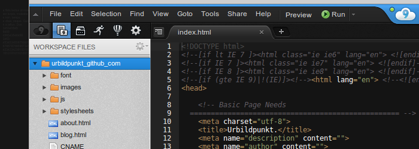

I'm John Quealy, and This is How I Work
April 2, 2013
In an attempt to find a name that is not only unique, but also carries some meaning, I have created urbildpunkt. It is a combination of two German words, roughly translating the name a friend and I had previously used, Protopixel.The first word, urbild, refers to a prototype or archetype, the beginning or ultimate stage of design. The second word, punkt, refers to a pixel as well as a period or point. So when these words are combined they can be interpreted in a number of ways, from a certain stage in the process of design to the actual product of design itself. It is more than just a word, it is a sentence, a phrase, a description, which is why I have decided to use weight and punctuation to emphasize this through its display.
The way I work on this site may also be a bit unique; I have setup a flexible online development environment with a combination of the Cloud9 IDE and GitHub hosting that even a Chromebook could enjoy. Cloud9 not only hosts all of my files but provides a web-based text editor and terminal app, creating a powerful development server. I write and test all of my code on their server, running a live preview of my site before I push all of the changes out to GitHub through the terminal app. It also allows for Ruby gems like Compass to be installed, which automatically compiles my Sass code to css. This workflow enables me to develop from any computer, anywhere.

It is nice to not be limited to a workspace, but the biggest advantage for me as a Linux “distro-hopper” is being free to clean install a fresh system anytime. I have a 22-in widescreen display at my desk and an 11.6-in Acer notebook for when I am working on the go, but my favorite workspace device has become my HP TouchPad. While I am still hopeful for the future of webOS, mine is utilizing the work of Cyanogenmod instead, taking full advantage of the Android operating system. It sits on my desk in its wireless dock bringing easy access to productivity apps that have enhanced my workflow, such as replacing my post-it-note mess with something far more elegant, organized, and even portable.

The name of this post is a reference to the lifehacker series.